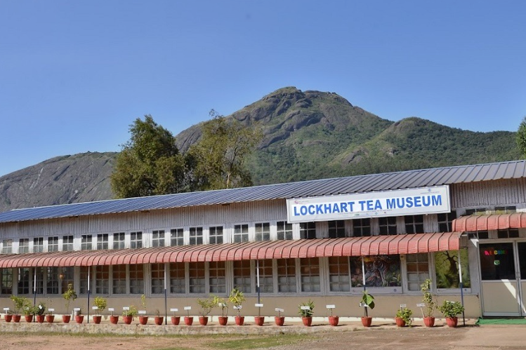
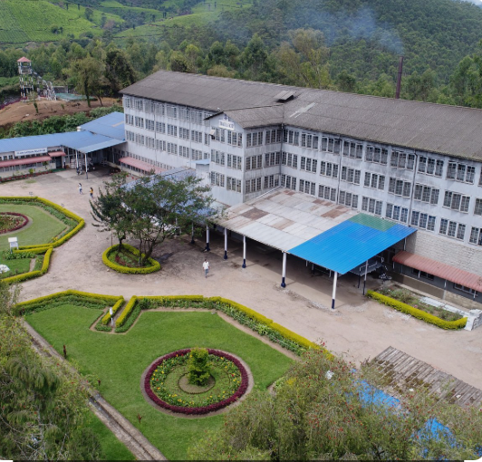
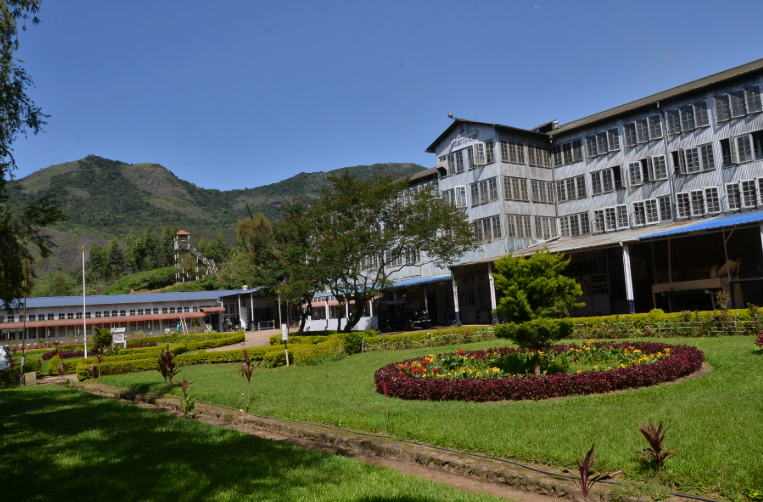

Lockhart Tea Factory is one of the oldest tea factories in Munnar, Idukki district, Kerala. Established during the British plantation era, the factory is famous for producing high-quality tea using traditional methods. Visitors can observe the complete tea-making process, from plucking fresh tea leaves to withering, rolling, drying, grading, and packing. The factory also has a tea museum that showcases the history of tea cultivation in Munnar.
Surrounded by lush tea plantations and scenic hills, Lockhart Tea Factory offers a memorable experience for tourists and tea lovers. Visitors can enjoy freshly brewed tea, purchase different varieties of tea, and learn about the rich heritage of Kerala's tea industry. It is an ideal destination for students, families, and anyone interested in tea production and the natural beauty of Munnar.



Lockhart Tea Factory is one of the oldest and most famous tea factories in Munnar, located at Lockhart Estate in Idukki District, Kerala. Established in the historic Lockhart Tea Estate, the factory is well known for producing premium orthodox tea using traditional methods. Visitors can observe tea processing, enjoy tea tasting and learn about the history of tea cultivation in Munnar. 1
The Lockhart Tea Estate was established in 1879 by Baron John Von Rosenberg and Baron George Otto Von Rosenberg. The present tea factory building was constructed in 1936 during the British period. Today, it is owned by Harrisons Malayalam Limited and continues to manufacture tea using the traditional orthodox process. 2
The factory follows the traditional orthodox tea manufacturing process. Fresh tea leaves are carefully processed to produce black tea, green tea and white tea. The factory produces around 20 million kilograms of tea every year, much of which is exported to different countries. 3
Today, Lockhart Tea Factory is one of Munnar's leading tea tourism destinations. Visitors from around the world come to experience traditional tea manufacturing, explore the tea museum and enjoy the scenic beauty of the surrounding tea plantations. 4